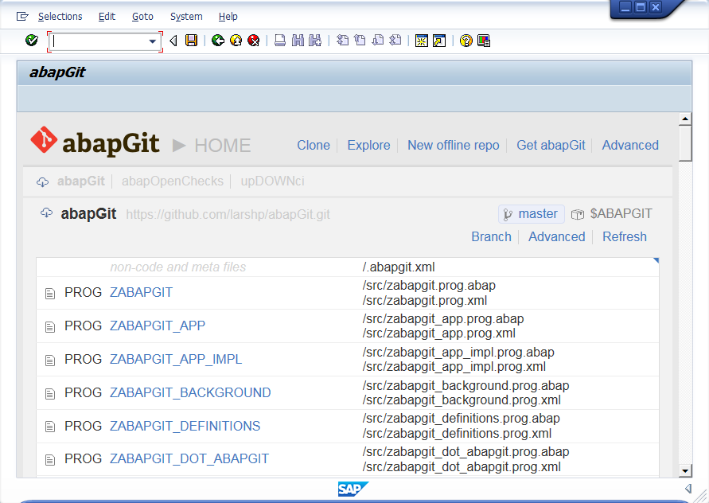
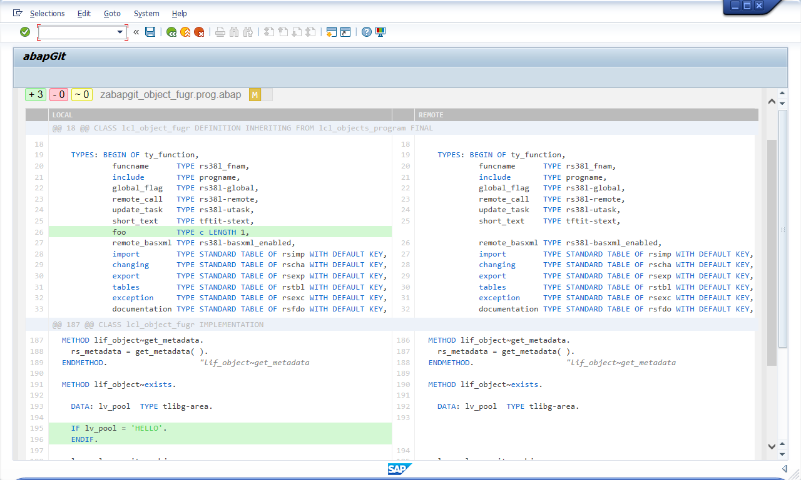
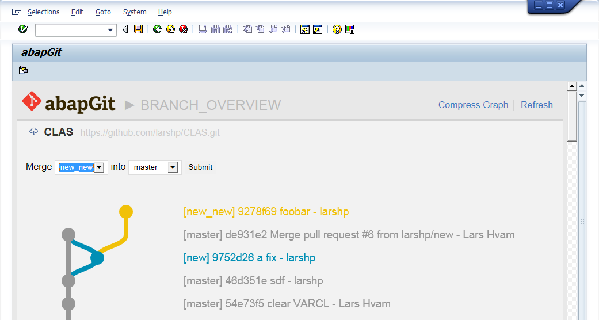
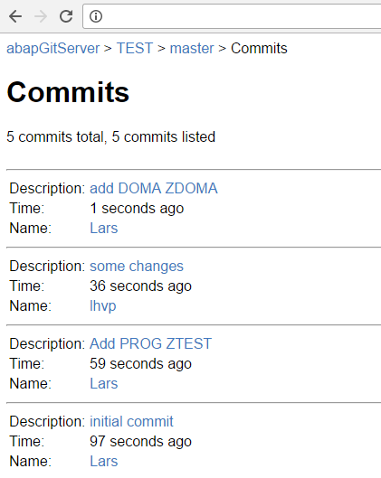

SAP d-kom 2017 - Karlsruhe
| @LarsHvam | |
| larshp | |
 |
|
Disclaimer

- Open source
- Old versions available
- Contribute
| Git client for ABAP | |
| started ~3 years ago | |
| ~1000 commits | |
| 12 contributors | |
| ~40000 lines | |
| 7.02 and up | |
| Alexander Tsybulsky | ||
| Eduardo Copat | ||
| Oliver Jägle | ||
| Svitlana Shlapak | ||
| Andrei Vishnevsky | ||
| Bohdan Petrushchak | ||
| Graham Robinson | ||
| Gregor Wolf | ||
| Nuno Godinho | ||
| Fabio Zuber | ||
| Fabian Lupa |
Design Goals
- Easy installation
- Easy upgrade
- Small system footprint
- Code readable in git repository
Connectivity
cl_http_client=>create_by_url(
EXPORTING
url = 'https://github.com'
ssl_id = 'ANONYM'
IMPORTING
client = li_client ).
li_client->request->set_cdata( '' ).
li_client->request->set_header_field(
name = '~request_method'
value = 'GET' ).
li_client->request->set_header_field(
name = 'user-agent'
value = 'git/abapGitv1.9.7' ).
li_client->request->set_header_field(
name = '~request_uri'
value = '/larshp/abapOpenChecks.git/info/refs?service=git-upload-pack' ).
li_client->send( ).
001e# service=git-upload-pack 000000fb868c5c06d2b51f6b83668f80922260f42a7ff4ca HEAD multi_ack thin-pack ... 003f868c5c06d2b51f6b83668f80922260f42a7ff4ca refs/heads/master 0040c1398119983b0ae48ec4091d9519194768a71bae refs/pull/268/head 0000
Serialization

REPORT zhello.
WRITE 'hello'.
<?xml version="1.0" encoding="utf-8"?>
<abapGit version="v1.0.0" serializer="LCL_OBJECT_PROG" serializer_version="v1.0.0">
<asx:abap xmlns:asx="http://www.sap.com/abapxml" version="1.0">
<asx:values>
<PROGDIR>
<NAME>ZHELLO</NAME>
<STATE>A</STATE>
<VARCL>X</VARCL>
<SUBC>1</SUBC>
<RLOAD>E</RLOAD>
<FIXPT>X</FIXPT>
<UCCHECK>X</UCCHECK>
</PROGDIR>
<TPOOL>
<item>
<ID>R</ID>
<ENTRY>test</ENTRY>
<LENGTH>4</LENGTH>
</item>
</TPOOL>
</asx:values>
</asx:abap>
</abapGit>
And deserialization
All files can be imported back into the ABAP systemSupported object types
| ACID | AUTH | CLAS | DOCT | DOCV |
| DOMA | DTEL | ENHC | ENHO | ENHS |
| ENQU | FUGR | IARP | IASP | IATU |
| MSAG | NROB | PARA | PINF | PROG |
| SFBF | SFBS | SFSW | SHI3 | SHLP |
| SICF | SPLO | SSFO | SSST | SMIM |
| SUSC | SUSO | TABL | TOBJ | TRAN |
| TTYP | TYPE | VCLS | VIEW | W3HT |
| W3MI | WDYA | WDYN | WEBI | XSLT |
Github Support
|
The HTTP header incident rfc2616-sec4.html#sec4.2 "Field names are case-insensitive" |
|
|
The SHA1 mismatch Git protocol: "Server and client MUST use lowercase for obj-id, both MUST treat obj-id as case-insensitive." | |
Features: Works With

|
|
 Team Services
|

|
 |
Features: Explore
Features: Diff
Features: Offline projects

Features: Branches
Features: Background mode

Use case: Share/Collaborate
Use case: Extra visibility/backup
abapGitServer Setup Guide
Labs Preview: Signing Commits
 https://github.com/larshp/abapGit/issues/358
https://github.com/larshp/abapGit/issues/358
ABAP
Continuous integration via Travis-CI
|
DEMO
#ABAPisNotDead
Slides | https://larshp.github.io/dkom2017 |
Contribute | http://abapgit.org |
|
| @LarsHvam |